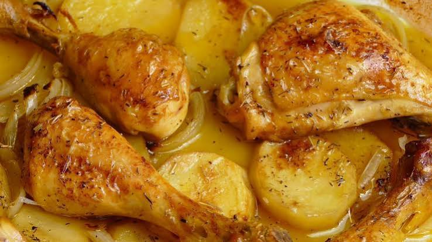

Pollo asado
Ingredientes
- 1 Pollo entero
- 1 o 2 Papas
- Limon
- 1 diente de ajo
- 50 ml de aceite de oliva virgen extra
- 20 ml de vinagre de jerez
- Sal al gusto

Elaboración paso a paso
- Desguesamos el pollo
- Lo aliñamos con el vinagre el limon y la sal
- Lo metemos en el horno 45 minutos
- Le damos la vuelta y le aññadimos las patatas
- Lo sacamos y listo pa comer
Descargar receta en pdf
Volver a inicio